00디지털 시스템
1. 마이크로컴퓨터의 시스템 구성
가. 컴퓨터의 기본 구성
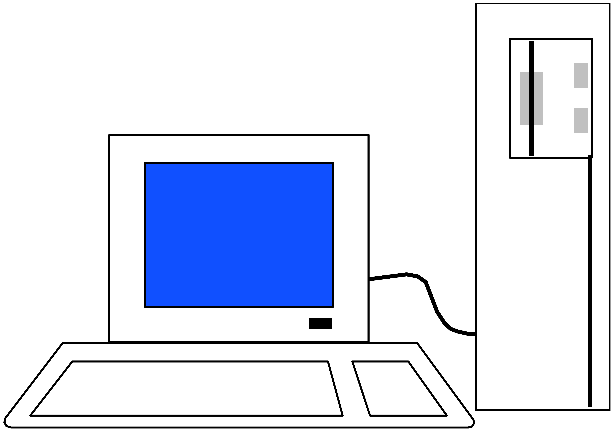
컴퓨터를 기능이나 규모의 정도로 분류한다면 초대형 컴퓨터, 대형 컴퓨터, 중형 컴퓨터, 소형컴퓨터, 초소형 컴퓨터로 나눌 수 있는데 개인용 컴퓨터는 초소형에 속한다.
그림 1-1 컴퓨터의 외형
그림에서 컴퓨터는 크고 작음에 관계 없이 기능면에서 본다면, 기본적으로 ① 입력장치, ② 출력장치, ③ 주기억 장치, ④ 연산장치 ⑤ 제어장치의 5개 부분으로 구성되는데, 그 중에서 주기억 장치, 연산장치, 제어장치를 합하여 중아 처리 장치, 즉 CPU(central processing unit)라 하며, 입력 장치와 출력 장치를 합하여 입출력(I/O : input/output)장치 또는 주변(peripheral)장치라고 한다.
④ | ||||
연산장치 | ||||
① | ③ | ② | ||
입력 장치 | 주기억 장치 | 출력 장치 | ||
⑤ | ||||
제어장치 |
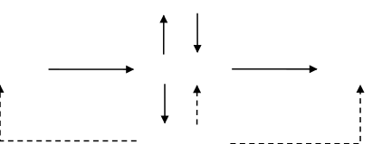
그림 1-2 중앙처리장치(CPU)
① 입력 장치는 정보(data)나 동작 순서(program)등을 전기 신호로 바꾸어 CPU로 보내 주는 역할을 하는 것으로 키보드, 조이스틱, 데이터 레코더 등과 같은 주변 기기를 말한다.
② 출력 장치는 주기억 장치에 보존되어 있는 입력 프로그램이나, 연산 처리 결과를 인간이 알아볼 수 있는 문자나 도형 또는 출력 신호 등으로 나타낸다. 그림에서는 모니터 디스플레이와 같은 주변기기가 여기에 속한다.
③ 주기억 장치는 입력 장치에서 공급하여 주는 데이터나 동작 순서 또는 연산 장치로부터 나오는 연산처리 결과 등을 저장(보존)하여 두는 역할을 한다. 일반적으로 반도체 기억 소자인 RAM을 사용하는데, 일부는 CPU내의 레지스터가 이 역할을 담당한다.
④ 연산 장치는 주기억 장치로부터 데이터가 공급되면 덧셈이나 뺄셈 등의 산술 연산과 AND, OR, NOT, EOR 등의 논리 연산을 한다. 이것은 CPU IC 칩(chip)속에 구성된 병렬 가산기를 통하여 이루어진다.
⑤ 제어 장치는 주기억 장치에 기억시켜 둔 동작 순서(프로그램에 의한 것)를 차례로 호출하여 그 동작 순서의 내용에 따라 각 장치가 적절하고 원활한 동작을 할 수 있도록 제어 신호를 발생시켜 각 장치에 공급하여 주는 역할을 한다. 일반적으로 이 장치는 CPU IC 칩속에 들어 있다.
연 도 | 비 트 | microprocess | personal computer | operating system |
71 | 4 bit | i4004 | ||
72 | 8 bit | i8008 | ||
74 | i8080 | |||
MC6800 | Apple I (6502) | |||
75 | i8085 | MSX | ||
Z80 | Apple II (6502) | CP/M V1.3 | ||
77 | CP/M V1.3 | |||
78 | 16bit | i8086 | CP/M86 V1.0 | |
79 | i8088 | CP/M V2.0-3.0 | ||
MC6800 | IBM PC(i8088) | |||
81 | MS-DOS V1.25 | |||
82 | i80286 | CP/M86 V1.1 | ||
MC68020 | IBM PC/XT(i8088) | |||
83 | MS-DOS V2.0 | |||
85 | 32bit | i80386 | IBM PC/AT(i80286) | |
86 | MC68030 | IBM PS/2 | MS-DOS V3.0 | |
87 | IBM PC/AT(i80386) | |||
89 | i80486 | IBM PC/AT(i80486) | MS-DOS V4.0 | |
91 | MC68040 | Macintosh(PC601) | MS-DOS V5.0 | |
93 | 64bit | pentium 64bit | IBM PC/Pentium | MS-DOS V6.0 |
94 | WINDOWS 3.1 | |||
95 | P6 | WINDOSW 95 |
표 1-1 CPU와 OS(오퍼레이팅시스템)의 발달사
위에서 밝힌 바와 같이 CPU IC칩은 컴퓨터의 심장부로서 일시 기억 장치, 연산 장치, 제어 장치를 포함하고 있어 프로그램을 해독하고, 산술 연산이나 논리 연산 그리고 주변기기에 대한 동작을 제어하는 기능을 한다. 이것은 IC 제조 회사에 따라 마이크로 프로세싱 유닛, 즉 MPU(micro processing unit) 또는 CPU 등 각기 다른 이름으로 불리고 있다.
나. 마이크로컴퓨터의 시스템 구성
마이크로 컴퓨터의 시스템 구성은 사용 목적과 규모에 따라 다르다. 소규모 시스템은 간단한 제어기로 이용하거나 컴퓨터의 하드웨어나 기계어 프로그래밍을 습득할 목적으로 구성한 것들이다.
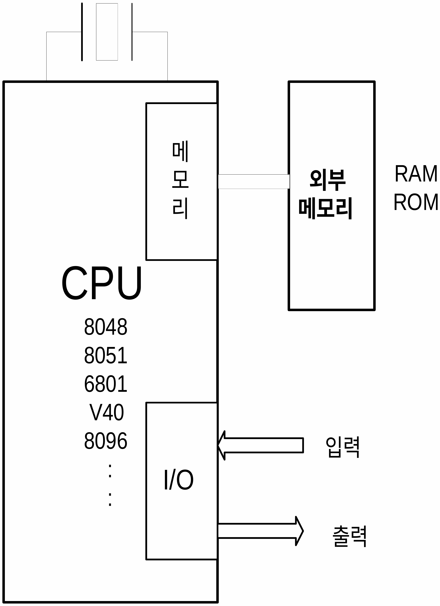
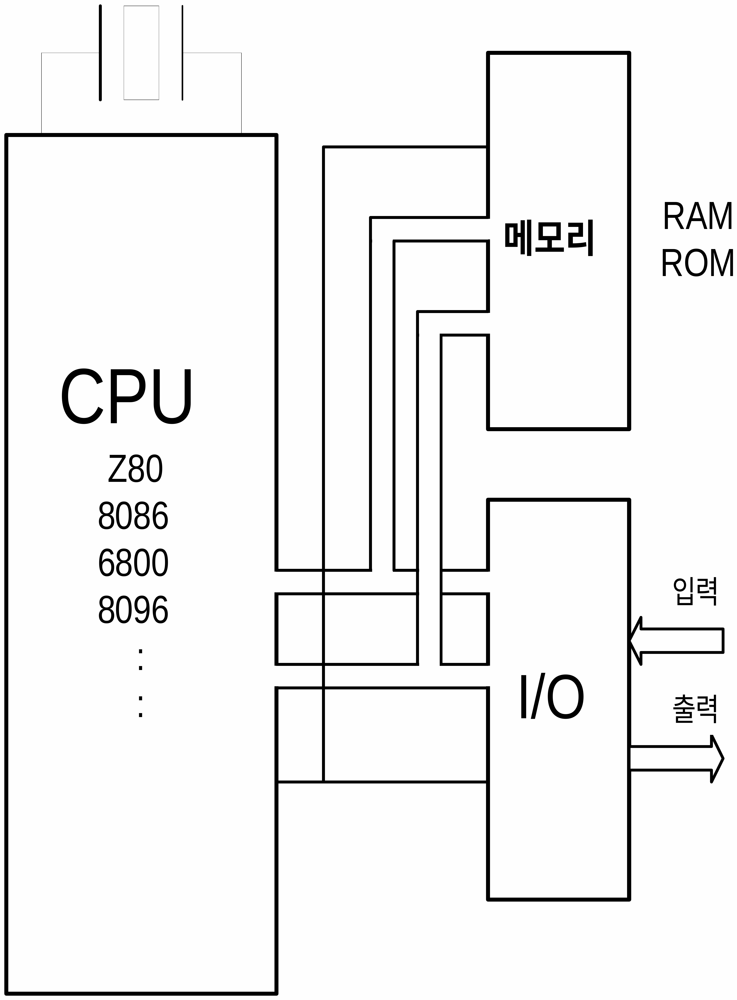
그림 1-3 마이크로컴퓨터의 기본 구성
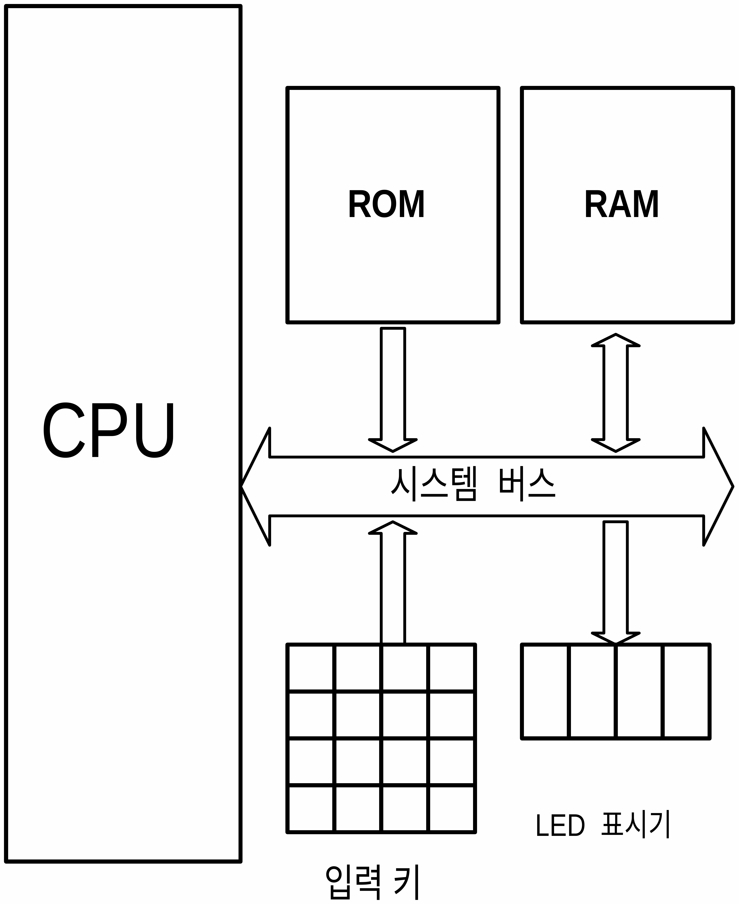
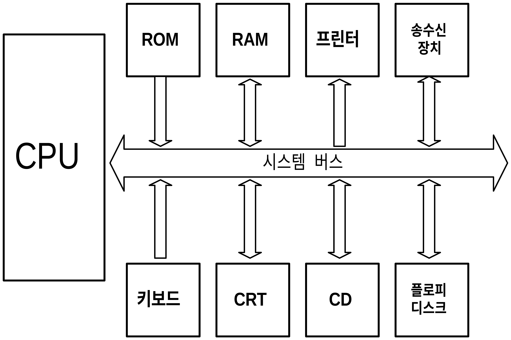
그림 1-4 소규모 마이크로컴퓨터의 시스템 구성 | 그림 1-5 대규모 마이크로컴퓨터의 시스템구성 |
위는 컴퓨터 시스템을 예로 나타낸 것으로, CPU IC 칩과 메모리 IC(RAM 과 EPROM등)칩 그리고 I/O 인터페이스용 PIO IC 칩으로 이루어진 가장 간단한 것들이다. 근래에는 제어용으로 간단하게 사용할 수 있도록 1개의 LSI 칩 속에 CPU와 I/O포트 그리고 소용량의 메모리 및 A/D변환기, CTC 등을 포함시켜 놓은 원 칩(one chip)마이크로 컴퓨터도 있다.
연 습 문 제
다음 각 물음에 대하여 답을 쓰시오.
1. 마이크로프로세서(microprocessor)란 무엇인지 간단히 설명하시오.
2. 마이크로컴퓨터와 원칩 마이크로컴퓨터의 차이에 대하여 설명하시오.
3. 중앙처리장치의 기능에 대하여 설명하시오.
4. 기억 장치 속에 기억될 수 있는 내용에는 무엇이 있는가?
5. 입·출력 장치의 기능을 설명하시오.
6. 최초로 만들어진 마이크로프로세서는 어떤 것인지 설명하시오.
7. 컴퓨터의 입·출력 주변 기기의 종류를 조사해 보아라.
01Z-80 CPU
1. Z80 CPU pin 구조
Z80 CPU는 1976년 Zilog사에서 발표된 이래 현재까지 마이크로 프로세서 분야에서 가장 일반적으로 사용되고 있다. Z80 시리즈는 기본형 Z80과 개량형 Z80A, Z80B 등이 있으나, 근본적인 차이점은 없고 동작 속도에서 차이가 있다. Z80이 최대 2.5[MHz], Z80A는 최대 4[MHz]의 Z80A를 기준으로 설명한다.
Z80은 40핀 DIP(Dual Inline Package)형 VLSI로 만들어져 있다. Z80 CPU는 그림 1-6과 같은 외부와의 접속을 위한 단자 배치로 구성되어 있다.
Z80 CPU의 입/출력 신호를 크게 분류하면 어드레스 버스, 데이터 버스, 제어 신호로 구분할 수 있고 제어 신호는 다시 시스텝 제어,CPU 제어, 버스 제어로 나눌 수 있다.
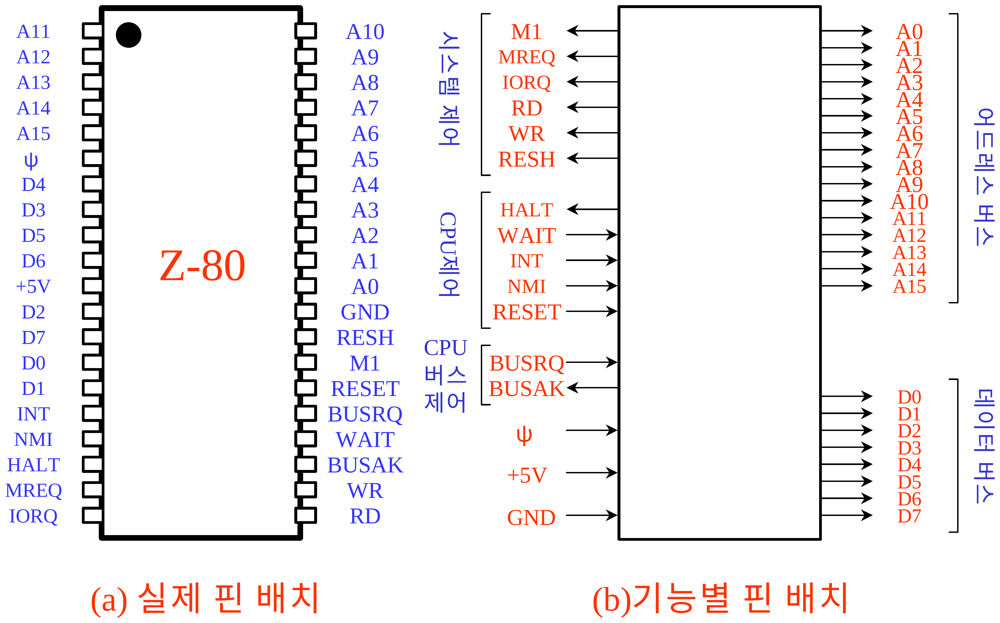
그림 1-6 Z80 CPU의 PIN 구조
가. 어드레스 버스(A0-A15)
A0 - A15는 3-state buffer positive logic 출력을 사용하여 16비트의 어드레스 버스로 메모리나 입/출력 디바이스간에 데이터 전송 및 번지를 지정할 수 있다. 즉, 최대 64[kbyte] 메모리를 번지(65536[byte])로 지정할 수 있다. 또한 A0 -A7는 256개의 입/출력 포트(port)를 지정할 수 있다.
나. 데이터 버스(D0 - D7)
D0 - D7은 8비트의 쌍방향 버스이며 메모리 및 입/출력 디바이스간에 데이터 전송에 사용한다.
다. 제어 신호
(1). Machine Cycle 1(M1)
현재의 machine cycle에서 OP code fetch cycle임을 나타내며 low active이다. M1은 인터럽트 요구시 CPU로부터 인터럽트 응답을 나타내기 위하여 IORQ와 함께 동작된다. 또한 Z80의 모든 제어 신호는 low active이다.
(2) Memory Request(MREQ)
이 신호는 메모리에 데이터를 red, write 기능이 수행되고 있음을 나타낸다. 또한 외부 메모리의 chip enable 신호의 일부로 사용된다.
(3) I/O Request(IORQ)
입/출력 버스에 출력되는 신호가 port의 입/출력을 지정하는 기능을 수행한다. 또한 인터럽트가 발생했을 때 M1 신호와 함께 발생된다.
(4) Read(RD)
CPU가 메모리나 입/출력 디바이스로부터 데이터를 read 하는 기능을 수행한다.
(5) Write(WR )
CPU가 메모리나 입/출력 디바이스로 데이터를 write 하는 기능을 수행한다. 또한 RD와WR 신호는 동시에 발생될 수 없다.
(6) Refresh(RFSH)
DRAM인 경우에만 사용하며 하위 어드레스 7[bit]가 refresh에 사용된다. 또한 메모리를 access 하는 것이므로 MREQ 신호도 동시에 출력된다.
라. CPU 제어 신호
(1) Halt(HALT)
CPU를 정지상태로 만드는데 사용되며 정지상태를 풀기 위해서는 인터럽트 요구(NMI, INT)나RESET 신호가 있어야 한다.
(2) Wait(WAIT)
CPU와 메모리 또는 입/출력 디바이스간에 데이터 전송시 동기를 맞추기 위하여 CPU에 대기 명령을 알리는 단자이다. 즉, 저속의 메모리 또는 입/출력 디바이스를 버퍼없이 접속시킬 수 있다.
(3) Interrupt Request(INT)
입/출력 디바이스에 CPU에 interrupt를 요구하는 단자이다. 또한 프로그램에 의해 interrupt의 enable과 disable을 선택할 수 있다. IFF(Interrupt enable F/F)가 set되어 있고 BUSRQ 신호가 없는 경우에만 이 신호가 인식되며 현재 수행중인 명령을 실행한 후에 인식된다.
(4) Non Maskable lnterrupt(NMI)
INT보다 우선 순위가 높은 interrupt로서 프로그램에 의해 disable을 선택할 수없다. NMI 신호가 인식되면 자동적으로 CPU는 0066H 번지로 점프하여 인터럽트 처리 루틴으로 들어간다.
(5) Reset(RESET)
CPU의 초기화를 실행한다. 즉, 프로그램 카운터를 0000H로 리세트 시키고 IFF상태를 리세트 하여 interrupt disable 상태를 만들고 I, R 레지스터를 00H 값으로 리세트 한다. 또한 interrupt mode를 0(zero)로 한다.
마. BUS 제어 신호
(1) Bus Request(BUSRQ)
어드레스 버스, 데이터 버스, 출력 제어 신호들을 high 임피던스 상태로 하여 외부의 다른 디바이스가 이들 버스를 사용할 수 있도록 요구하는 단자이다. 이 신호는 NMI보다 우선 순위가 높다.
(2) Bus Acknowledge(BUSAQ)
버스 사용을 요구한 외부 디바이스에 데이터 버스와 어드레스 버스가 high임피던스 상태가 되었음을 알리는 단자이다.
바. CIOCK(CLK)
CPU, 메모리 및 외부 입출력 디바이스들의 동기를 맞추기 위한 입력 신호이다. 이상의 Z80 CPU pin 단자에 대한 요약을 표 1-2에 나타내었다.
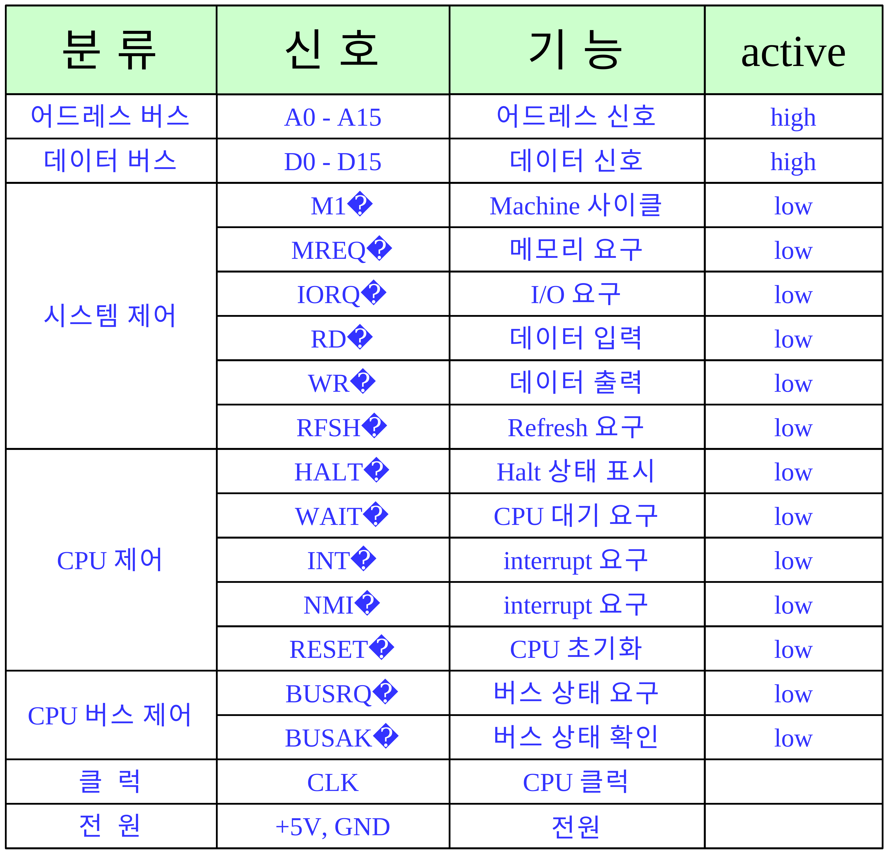
표 1-2 Z80 CPU의 PIN 동작
2. Z80 CPU 타이밍(timing)
CPU 동작의 시간 관계는 각 machine cycle의 타이밍도를 이용한다. 하나의 명령 수행시 필요한 시간을 명령 사이클(instruction cycle) 이라고 한다. CPU의 기본타이밍은 인출 사이클(fetch cycle)과 실행 사이클(execute cycle)의 반복으로 구성된다. 기본 동작에는 OP code fetch, 메모리 red,메모리write, I/O read, I/O write, 인터럽트 응답 등이 있다. 모든 명령은 fetch 사이클로부터 시작하며 이 사이클을 machine cycle 이라 부르고 1-6개의 machine cycle이 필요하다. 또한 각 machine cycle은 3-6개의 T cycle(clock주기)로 구성된다.
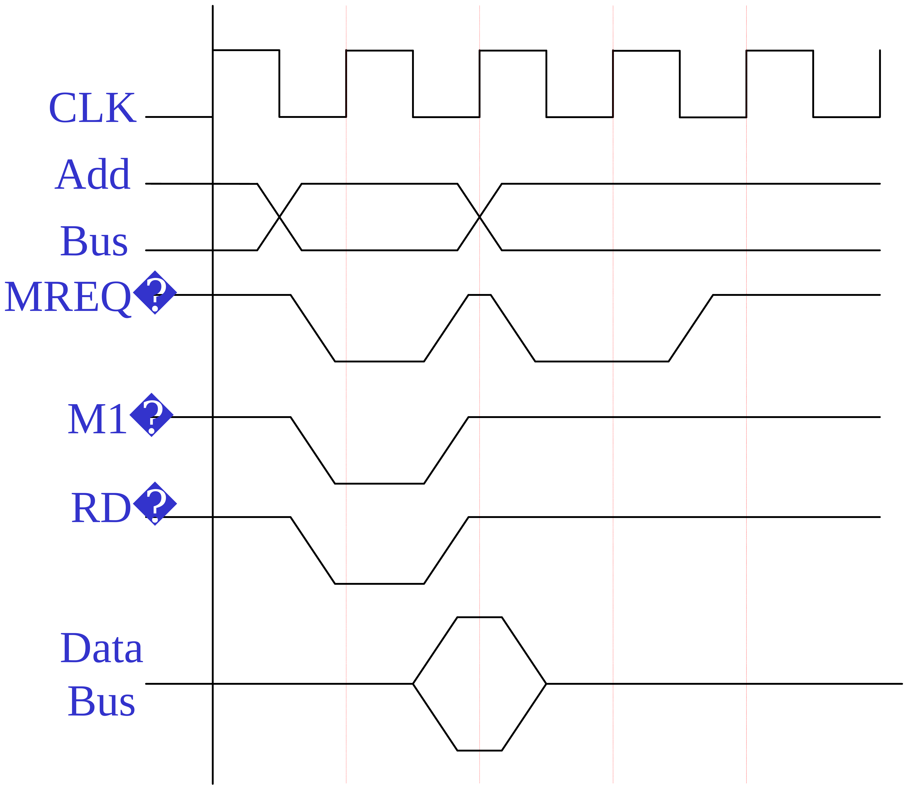
그림1-7 fetch cycle(M1 cycle)
가. MI cycle(fetch cycle)
모든 명령의 첫 번째 machine cycle(M1)은 동작 code를 인출 (fetch)하기 위한 fetch cycle이다.
(1) T1의 상승(rising edge)에서 M1 신호가 L이 되어 fetch cycle 상태로 되었음을 나타내고 PC의 내용이 번지 BUS에 실린다.
(2) T1의 하강(falling edge)에서 MREQ 및 RD 신호가 active 되어 외부 메모리의 내용을 가져온다.
(3) T2의 하강(falling edge)에서 CPU는 WAIT 신호를 조사하고 메모리는 T3의 상승 이전에 지정된 번지의 내용을 데이터 버스에 실어준다.
(4) T3의 상승(rising edge)에서 CPU는 데이터 버스의 내용(OP code)을 sampling 한다.
(5) T3의 하강(falling edge)에서 MREQ 신호가 다시 active 되고 외부 DRAM의re-fresh 가 동작된다. 이때 CPU 내부에서는 명령이 해독된다.
T 사이클 | 동 작 | 내 용 |
T1 | (PC)→(MAR) | PC의 내용을 어드레스 버스로 전달 |
T2 | (PC+1)→(PC) | PC의 내용이 +1 |
T3 | (M)→(IR) | 명령을 IR로 전달 |
T4 | (IR)→디코더 | 명령을 해독 |
표 1-3 M1 동작의 T 사이클
나. 메모리의 읽기/쓰기 cycle(memory read/write cycle)
이 cycle은 각각 3T로 구성된다.
(1) 메모리 읽기 cycle
T1 중에 MREQ와 RD 신호가 Low active 된다.
T3 의 하강(falling edge)에서 데이터를 읽어들인다.
2) 메모리 쓰기 cycle
T2의 하강(falling edge)에서 WR 신호가 active 된다.
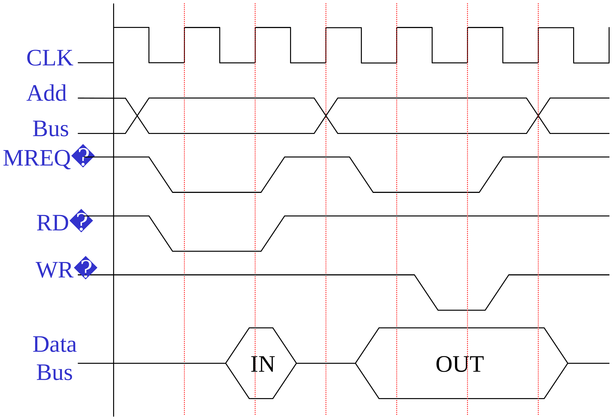
그림1-8 메모리의 읽기/쓰기 cycle
다. I/O read/write cycle(I/O read/write cycle)
T1의 상승(rising time)에서 입출력 포트의 번지가 번지 버스(A0 -A7)상에 실리고 T2의 상승(rising time)에서 IORQ 신호가 active 된다.
(1) 입력시 RD 신호가 IORQ 신호와 동시에 active 된다.
T3 의 하강(falling edge)에서 데이터 버스에서 데이터를 읽어들인다.
(2) 출력시 WR 신호가 IORQ 신호보다 조금 늦게 active 된다.

그림1-9 입/출력 cycle
라. 버스 요구/응답 cycle(bus request/acknowledge cycle)
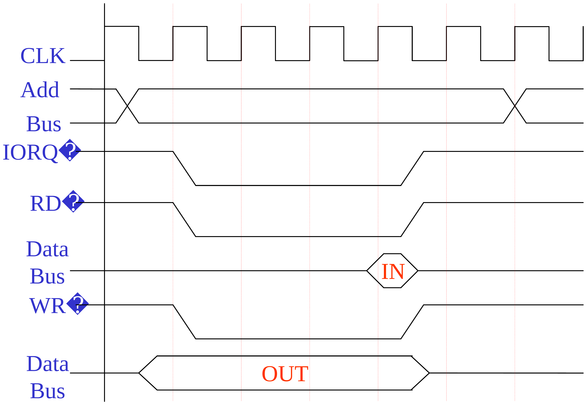
그림1-10 버스 요구/응답 cycle
외부장치에서 주어진 BUSRQ 신호는 임의의 machine cycle의 마지막 T cycle의 상승(rising edge)에서 BUSAK 신호를 발생하여 버스 요구 신호에 응답하였음을 외부장치에 알린다.
BUSRQ 신호를 보낸 후 BUSAK 신호를 감지한 외부장치는 메모리와 데이터간의 데이터 전송을 제어할 수 있게 된다. 이것은 DMA 등에서 사용된다.
마. 인터럽트 요구/응답 cycle (interrupt request/acknowledge cycle)
CPU는 매 명령 cycle의 최종 T cycle 상승(rising edge)에서 INT 신호를 조사하며 그 값이 L이면 인터럽트 cycle로 들어간다. 그러나 인터럽트 금지 상태나 BUSRQ 신호가 active일 때는 응답하지 않는다.
3. Z80 CPU 내부 구조
CPU의 내부 구성은 그림1-11과 같이 연산기능을 갖는 ALU(Arithmetic Logic Unit)와 CPU와의 timing, 외부소자와의 동기 등을 위한 제어기능을 갖는 제어부, 메모리로부터 읽어들인 데이터를 임시로 저장해 두는 레지스터부 등 크게 3부분으로 분류한다.
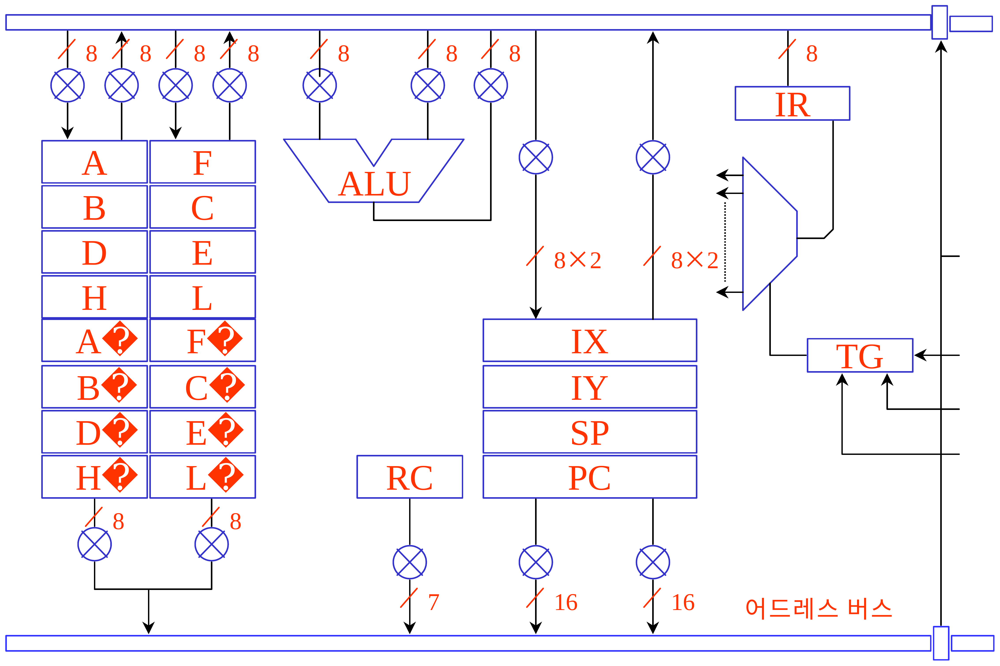
그림1-11 Z80 CPU의 내부구성
4. 레지스터
레지스터부는 CPU 내부에서 메모리 기능을 하며 그림 2-9와 같이 법용 레지스터부와 전용 레지스터부로 구성된다.
범용 레지스터(general purpose register) | 특수 레지스터 (special register) | ||||
주 레지스터 (main register) | 보조 레지스터 (auxiliary reg) | I(interrupt vector) | R(memory refresh) | ||
A | F | A' | F' | IX | |
B | C | B' | C' | IY | |
D | E | D' | E' | SP | |
H | F | H' | F' | PC | |
그림1-12 Z80 CPU 레지스터
가. 범용 레지스터(General Register)
8[bit]의 주(main) 레지스터부(A, B, C, D, E, H, L, F,)와 보조(auxiliary) 레지스터부(A,' B,' D,' E,' H,' L,' F,')가 있다. 보조 레지스터부는 주 레지스터의 내용을 교환 명령에 의해 대피시킬 때 사용된다.
이 레지스터들은 독립적으로 사용되기도 하고 레지스터 pair로서 16[bit]로 사용할 수도 있다(BC, DE, HL).
나. special 레지스터
(1) 누산기(Accumulator :A)
A 레지스터는 일명 누산기라고도 하며 8[bit]의 산술연산이나 논리연산의 결과를 기억하는 레지스터이다.
(2) 상태 레지스터(Flag register :F)
연산 결과 A 레지스터의 상태를 표시하기 위하여 사용한다. 각각의 상태에 따라 set(1), reset(0) 된다.
MSB | LSB | ||||||
S | Z | X | H | X | P/V | N | C |
sign flag | zero flag | 사용 무 | half flag | 사용 무 | parity/overflow flag | substract flag | carry flag |
그림 8 플래그 레지스터
(가) 부호 플래그(Sign Flag : S)
연산 결과 최상위 Bit가 1일 때 세트된다. S가 1이면 음수이고 0이면 양수를 나타낸다.
(나) 제로 플래그(Zero Flag :Z)
연산 결과 출력이 0일 때 세트된다.
(다) Half carry 플래그(Half Carry Flag : H)
BCD 연산 결과 하위 4[bit]중 최상위 Bit에서 carry 또는 borrow가 발생 하였을 때 세트된다.
(라) Parity/Overflow 플래그(Parity/Overflow Flag : P/V)
패리티에서는 논리연산 결과 각 Bit 중 1의 개수가 짝수일 때 세트되고 Overflow에서는 2의 보수 산술연산에서 overflow가 발생했을 때 세트된다. +127보다 크거나-128보다 작으면 세트된다.
마) 감산 플래그(Subtract Flag : N)
감산연산인 경우 세트된다.
(바) 캐리 플래그(Carry Flag : C)
가/감산 결과 출력(a7)에서 carry 또는 borrow가 발생하였을 때 세트 된다.
다. 전용 레지스터(exclusive register)
(1) 프로그램 카운터(Program Counter :PC)
PC는 CPU가 다음에 실행할 명령이 들어있는 메모리 번지를 나타내는 레지스터로 16[bit] 어드레스 전용 레지스터이다. 명령이 fetch 되면 자동적으로 PC 값이 +1이 된다. jump 명령 수행시 점프할 번지를 PC에 저장한다.
(2) 스택 포인터(Stack Pointer : SP)
RAM에 LIFO(Last in First Out) 형태의 스택 영역을 확보하여 레지스터pair 내용 등을 대피할 수 있는 레지스터로서 현재의 스택 top 번지를 지시하는 16[bit] 레지스터이다.
(3) 인덱스 레지스터(Index Register : IX, IY)
IX, IY는 독립된 16[bit] 레지스터로 기준 번지로부터 변위(displacement)를 지정할 수 있는 indexing 모드의 어드레싱용으로 사용된다. 또한 번지지정이나 16[bit] 데이터로도 사용된다.
(4) 인터럽트 벡터 레지스터(interrupt Vector Register : I)
I 레지스터는 interrupt 처리를 위한 8[bit] 레지스터이며 interrupt에 의한 서브루틴을 지정하는 간접 번지의 상위 바이트를 지시하는데 사용한다.
(5) 메모리 refresh 레지스터(Memory Refresh Register :R)
R 레지스터는 refresh counter 라고도 하며 DRAM 사용할 때 refresh 동작을 하기위한 메모리 refresh용의 8[bit] 레지스터이다.
연 습 문 제
다음 각 물음에 대하여 답을 하시오.
1. Z80 CPU 어드레스 버스에 대해서 간단히 설명하시오.
2. Z80 제어신호에 대해서 간단히 설명하시오.
3. Z80 CPU 제어신호에 대해서 간단히 설명하시오.
4. 버스 제어신호에 대해서 간단히 설명하시오.
5. Z80 범용 레지스터에 대하여 설명하시오.
02CPU 주변소자 IC
1. PPI(programmable peripheral interface)
8255A는 인텔(intel)사 제품의 PPI(programmable peripheral interface)로 3개의 포트(포트 A, B, C)의 8비트 입출력을 가지고 있는 범용 입출력 프로그래머블 입출력 장치이다.
가. 특징
(1) 40핀 DIP, 5V단일 전원이다.
(2) 모든 입출력은 TTL 컴퍼터블이다.
(3) 24핀 프로그래머블 I/O핀(A, B, C포트)
(4) A,B,C 포트를 출력 포트로 사용할 시 래치/버퍼로 되어 있어 1.5V, 1mA의 출력 전류로 달링톤 트랜지스터를 구동시킬 수 있다.
(5) A,B,C 포트를 8비트씩 3그룹이나 2그룹으로 독립해서 프로그램할 수 있다.
(가) 모드 0 : 베이식(basic) 입력/출력
(나) 모드 1 : 스트로브(strobed), 입력/출력
(다) 모드 2 : 양방향(bidirectional) 버스
나. 내부구조 및 핀 배치
PA3 | 1 | ● | 40 | PA4 | |||||
PA2 | 2 | 8255A | 39 | PA5 | |||||
PA1 | 3 | 38 | PA6 | ||||||
PA0 | 4 | 37 | PA7 | ||||||
RD' | 5 | 36 | WR' | ||||||
CS' | 6 | 35 | RESET | ||||||
GND | 7 | 34 | D0 | ||||||
A1 | 8 | 33 | D | ||||||
A0 | 9 | 32 | D2 | ||||||
PC7 | 10 | 31 | D3 | ||||||
PC6 | 11 | 30 | D4 | ||||||
PC5 | 12 | 29 | D5 | ||||||
PC4 | 13 | 28 | D6 | ||||||
PC0 | 14 | 27 | D7 | ||||||
PC1 | 15 | 26 | VDD | ||||||
PC2 | 16 | 25 | PB7 | ||||||
PC3 | 17 | 24 | PB6 | ||||||
PB0 | 18 | 23 | PB5 | ||||||
PB1 | 19 | 22 | PB4 | ||||||
PB2 | 20 | 21 | PB3 | ||||||
그림1-14 핀 배치도 | |||||||||
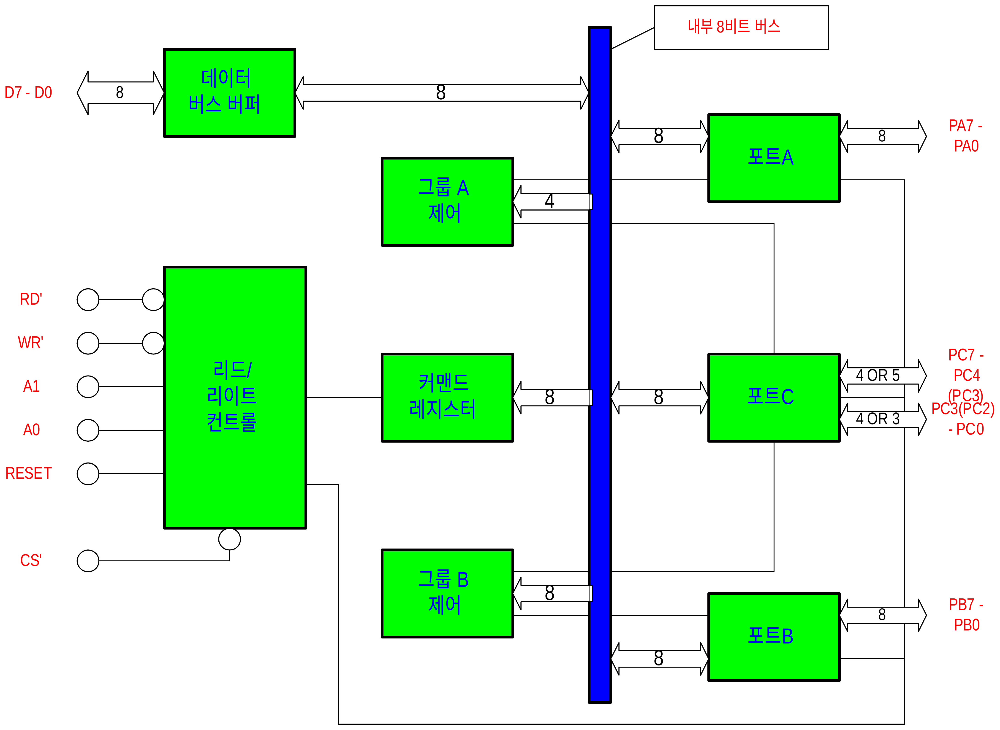
다. CPU 인터페이스
(1) ∼ : 양방향 데이터 버스
D7 D0양방향 데이터 버스로서 8086에서 나오는 신호를 쓰기도 하고 읽기도 한다.
(2) RD(read) : 입력, 액티브 'L'
8255A에서 데이터를 읽기 위한 신호로서 트레이닝 키트에서는 CPU의 RD신호를 연결한다.
(3) WR(write) : 입력, 액티브 'H'
8255A로 데이터 및 코맨드를 쓰기 위한 신호로서 트레닝 키트에서는 CPU의 WR신호를 연결한다.
(4) A0 - A1 : RD, WR신호와 조합해서 3개의 포트와 제어(control)레지스터를 선택한다.
8086 트레닝 키트에서는 A0에는 어드레스 버스 A1, A1에는 어드레스 버스 A2를 연결한다.
(5) CS'(chip select) : 입력, 액티브 'L'
8255A의 칩 자체를 인에블 시킨다.
(6) RESET : 입력, 액티브 'H'에서 8255A는 리셋된다.
리셋 상태는 다음과 같다.
(가) 제어 레지스터는 모두 클리어 된다.
(나) 모든 포트(A, B, C)는 자동적으로 입력 모드가 된다.
(다) 8255는 CPU에서 어떤 제어를 받기 전까지는 리셋 상태를 유지한다.
라. 주변장치 인터페이스
(1) A 그룹
포트 A(A0 - A7) : 8비트 데이터 출력일 경우 래치/버퍼 8비트 입력일 경우 래치
포트 C(C7 - C4) : 4비트 출력일 경우 래치/버퍼, 4비트 입력일 경우 래치
(2) B 그룹
포트 B(B0 - B7) : 4비트 출력일 경우 래치/버퍼, 4비트 입력일 경우 래치
포트 C(C3 - C0) : 4비트 출력일 경우 래치/버퍼, 4비트 입력을 경우 래치
마. 8255A 모드 설정
8255A는 그림에서와 같이 3개의 기본 모드를 갖고 있으며, 이것을 프로그램으로 선택해서 사용할 수 있다. 또 24비트의 포트는 동작 모드를 독립적으로 설정할 수 있는 2개의 그룹 A, B로 나누어진다. 그룹 A는 모드 0, 모드 1, 모드 2의 3종류 중 어느쪽을 사용할 수 있지만 그룹 B는 모드 0, 모드 1의 2종류만 사용할 수 있다.
(1) 모드 0
모드 0그림에서 보여 주고 있듯이 단순히 입출력 포트로 사용하며, 8255A는 거의 이 모드로 사용하고 있다. 포트 A, 포트 B는 8비트 포트 단위로 입/출력 중 어느쪽을 선택해서 사용할 수 있지만, 포트 C는 4비트 단위로 상위 4비트, 하위 4비트 단위로 독립적으로 선택할 수 있다. 출력 포트로 사용할 때에는 출력 데이터는 래치되어 출력된다.
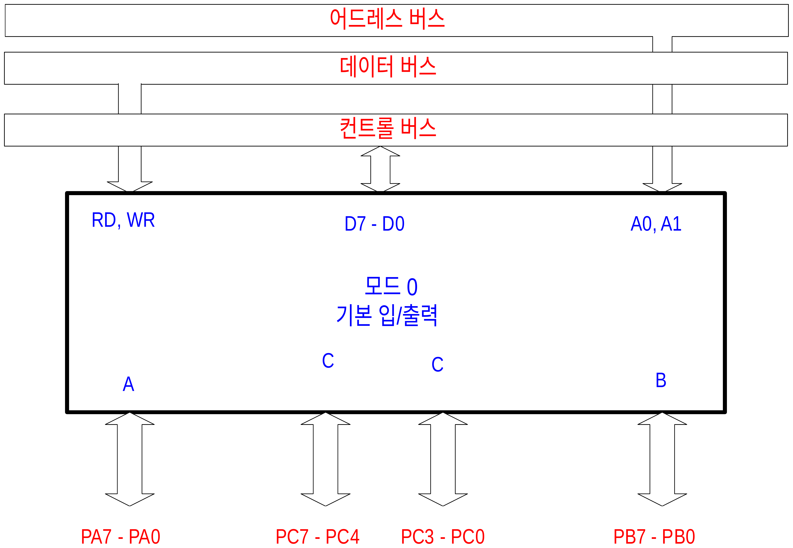
8255A | ||
PA7 ∼ PA0 | ←(8비트)→ | 입력 또는 출력 |
PB7 ∼ PB0 | ←(8비트)→ | 입력 또는 출력 |
PC7 ∼ PC0 | ←(8비트)→ | 입력 또는 출력 |
그림 1-17 모드 0의 동작 | ||
(2) 모드 1
모드 1에서는 포트 A 또는 포트 B를 데이터의 입출력 포트로 사용하고, 포트 C는 제어단자로 사용됨.
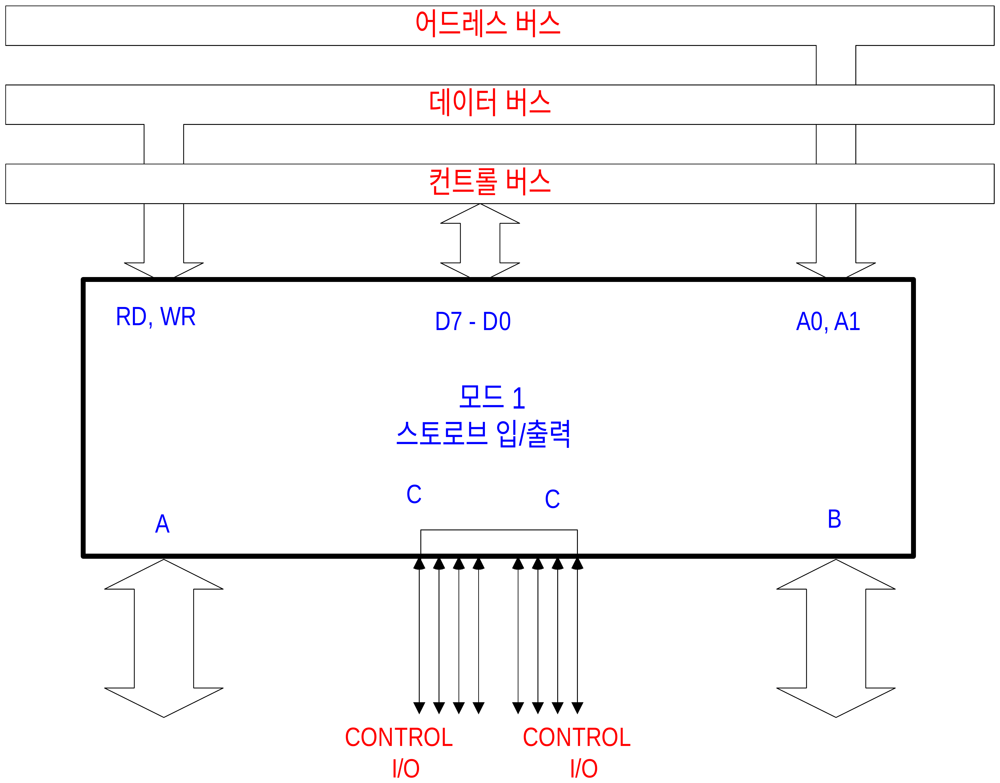
(3) 모드 2
기본적으로 모드 1과 같지만 모드 2에서는 양방향 입출력 포트로 사용되는 것이 다름.
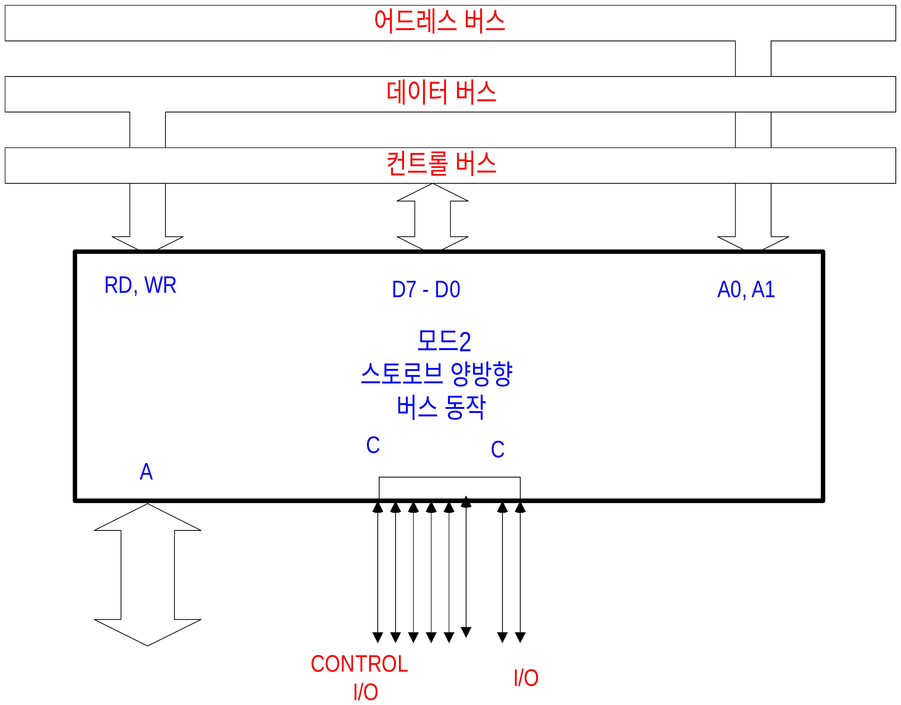
2. 8255A 프로그래밍
가. 컨트롤 워드(control word)
모드 설정을 하기 위해서는 8255A의 제어는 ,단자를 모두 '1'로 해서 테이터를 쓰면된다. 모드 설정을 하기 위해서 써넣을 데이터(컨트롤 워드)는 비트 7(MSB)를 1로 한다.
A1 A0실제로 모드 설정을 하는 데이터는 남은 7비트가 사용된다.
컨트롤 워드의 비트 7을 0으로 해서 데이터를 써 넣으면 모드 1과 모드 2에서 포트 C가 인터럽트 신호로 될 때에 이 신호의 셋/리셋을 할 수 있다.
나. 데이터
포트에 대해서 데이터의 읽기/쓰기는 표7-1에서 보여준 것과 같이 A1, A0를 조합해서 컨트롤 워드와 같은 방법으로 포트를 제어함.
D7 | D6 | D5 | D4 | D3 | D2 | D1 | D0 | ||||||||||||
1 | |||||||||||||||||||
그룹 B 제어 | |||||||||||||||||||
포트 C (하위) | 0 | 출력 | |||||||||||||||||
1 | 입력 | ||||||||||||||||||
포트 B | 0 | 출력 | |||||||||||||||||
1 | 입력 | ||||||||||||||||||
모드선택 | 0 | 모드 0 | |||||||||||||||||
1 | 모드 1 | ||||||||||||||||||
그룹 A 제어 | |||||||||||||||||||
포트 C (상위) | 0 | 출력 | |||||||||||||||||
1 | 입력 | ||||||||||||||||||
포트 A | 0 | 출력 | |||||||||||||||||
1 | 입력 | ||||||||||||||||||
모드 선택 | 00 | 모드 0 | |||||||||||||||||
01 | 모드 1 | ||||||||||||||||||
1× | 모드 2 | ||||||||||||||||||
기능 제어 | 0 | 비트 셋/리셋 | |||||||||||||||||
1 | 모드 선택 | ||||||||||||||||||
그림 1-20 모드 설정 | |||||||||||||||||||
D7 | D6 | D5 | D4 | D3 | D2 | D1 | D0 | ||||||||||||||||
1 | |||||||||||||||||||||||
비트 셋/리셋 | 0 | 리셋 | |||||||||||||||||||||
1 | 셋 | ||||||||||||||||||||||
포트 C 비트 선택 | |||||||||||||||||||||||
비트 | 0 | 1 | 2 | 3 | 4 | 5 | 6 | 7 | |||||||||||||||
D1 | 0 | 1 | 0 | 1 | 0 | 1 | 0 | 1 | |||||||||||||||
D2 | 0 | 0 | 1 | 1 | 0 | 0 | 1 | 1 | |||||||||||||||
D3 | 0 | 0 | 0 | 0 | 1 | 1 | 1 | 1 | |||||||||||||||
기능제어 | 0 | 비트 셋/리셋 | |||||||||||||||||||||
1 | 모드 선택 | ||||||||||||||||||||||
그림 1-21 비트 셋/리셋 | |||||||||||||||||||||||
D7 | D6 | D5 | D4 | D3 | D2 | D1 | D0 | ||||||||||||
1 | |||||||||||||||||||
포트 C | 하위 4비트(PC3 ∼ PC0) | ||||||||||||||||||
1 | 입력 | ||||||||||||||||||
0 | 출력 | ||||||||||||||||||
포트 B | |||||||||||||||||||
1 | 입력 | ||||||||||||||||||
0 | 출력 | ||||||||||||||||||
포트 B의 모드 | |||||||||||||||||||
1 | 입력 | ||||||||||||||||||
0 | 출력 | ||||||||||||||||||
포트 C | 하위 4비트(PC3 ∼ PC0) | ||||||||||||||||||
1 | 입력 | ||||||||||||||||||
0 | 출력 | ||||||||||||||||||
포트 A의 모드 | |||||||||||||||||||
1 | 입력 | ||||||||||||||||||
0 | 출력 | ||||||||||||||||||
D6 | D5 | 포트 A 모드 | |||||||||||||||||
0 | 0 | 모드 0 | |||||||||||||||||
0 | 1 | 모드 1 | |||||||||||||||||
1 | X | 모드 2 | |||||||||||||||||
보통 1(모드 바이트로 있다는 것을 가르킨다.) | |||||||||||||||||||
그림 1-22 8255A 모드 바이트 | |||||||||||||||||||
D7 | D6 | D5 | D4 | D3 | D2 | D1 | D0 | |||||||||||
1 | ||||||||||||||||||
비트 셋/리셋 | ||||||||||||||||||
1 | 비트 셋 | |||||||||||||||||
0 | 비트 리셋 | |||||||||||||||||
비트 지정 (C 포트) | ||||||||||||||||||
D2 | D1 | D0 | 비 트 | |||||||||||||||
0 | 0 | 0 | 0 | |||||||||||||||
0 | 0 | 1 | 1 | |||||||||||||||
0 | 1 | 0 | 2 | |||||||||||||||
0 | 1 | 1 | 3 | |||||||||||||||
1 | 0 | 0 | 4 | |||||||||||||||
1 | 0 | 1 | 5 | |||||||||||||||
1 | 1 | 0 | 6 | |||||||||||||||
1 | 1 | 1 | 7 | |||||||||||||||
보통 0 (비트 셋/리셋을 의미한다.) | ||||||||||||||||||
(비트 셋/리셋 기능은 포트 C에 대해서만 유효하다. | ||||||||||||||||||
그림 1-23 8255A 셋/리셋 제어 바이트 | ||||||||||||||||||
3. 8253의 구조 및 기능
가. 8253의 핀 배치도
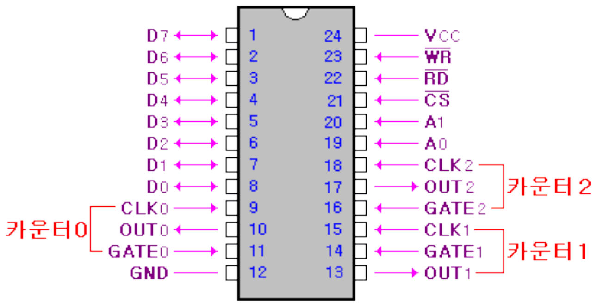
그림 1-24 8253 핀 배치
나. 8253의 기능도
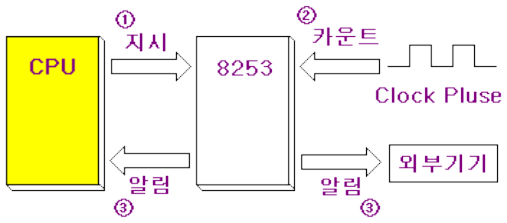
그림 1-25 8253의 기능도
다. 핀별 기능
⑴ RD (Read), WR (Write) : CPU에서의 데이터 입/출력
⑵ A0, A1 : 8253 내의 각 카운터 선택
A1 | A0 | 선택되는 카운터 |
0 | 0 | 카운터 0 |
0 | 1 | 카운터 1 |
1 | 0 | 카운터 2 |
1 | 1 | Control Word |
선택되는 카운터 | 단 자 명 | 처리 | ||||
CS | A1 | A0 | RD | WR | ||
0 | L | L | L | H | L | 카운터 0에 카운터 값을 세트 |
0 | L | L | L | L | H | 카운터 0에 카운터 결과를 리드 |
1 | L | L | H | H | L | 카운터 1에 카운터 값을 세트 |
1 | L | L | H | L | H | 카운터 1에 카운터 결과를 리드 |
2 | L | H | L | H | L | 카운터 2에 카운터 값을 세트 |
2 | L | H | L | L | H | 카운터 2에 카운터 결과를 리드 |
L | H | H | 불가 | |||
컨트롤 | L | H | H | H | L | 각 카운터에 대한 컴멘드 설정 |
⑶ D0 ∼ D7 : 데이터 버스와 접속해서 컴멘드 카운터의 초기값 설정, 카운트 데이터 리드
⑷ RESET : 내부 기능들을 초기 상태로 돌림
⑸ CS : Chip을 Enable시키기 위한 신호 (Chip Select) ("L"일 경우 선택)
⑹ CLK : Clock Pluse가 입력되는 단자.
⑺ OUT : 카운터에서의 출력으로, 카운터에 써 넣은 수만큼의 펄스가 CLK로 들어오면 이 단자를 통해 1개의 펄스를 출력하기도 하고 같은 펄스를 내보내기도 한다.
⑻ GATE : 각 카운터의 계수 동작을 제어하기 위한 단자. "H"일 때 동작, "L"일 때 일시 멈춤
다. 모드 지정 및 동작 모드
⑴ Control Word의 구조
D7 | D6 | D5 | D4 | D3 | D2 | D1 | D0 |
SC1 | SC0 | RL1 | RL0 | M2 | M1 | M0 | BCD |
⑵ SC (Select Counter)
SC1 | SC0 | 의미 |
0 | 0 | 카운터 0 선택 |
0 | 1 | 카운터 1 선택 |
1 | 0 | 카운터 2 선택 |
1 | 1 | 무효 |
⑶ RL (Read/Load)
RL1 | RL0 | 의미 |
0 | 0 | 카운터 래치 오퍼레이션 |
0 | 1 | 하위 8비트만 리드/라이트 |
1 | 0 | 상위 8비트만 리드/라이트 |
1 | 1 | 하,상위에서 16비트 레지스터 전체 리드/라이트 |
⑷ M (Mode)
M2 | M1 | M0 | 모드명 | 의미 |
0 | 0 | 0 | 모드 0 | 카운트 완료 후 "H" 출력 |
0 | 0 | 1 | 모드 1 | 카운트 동안만 "L" 출력 |
× | 1 | 0 | 모드 2 | 카운트 동안 "H", 다음 1클록 "L", 다음 반복 |
1 | 0 | 0 | 모드 4 | 카운트 동안 "H", 다음 1클록 "L", 다음은 "H" |
1 | 0 | 1 | 모드 5 | 모드 4와 다른점 : GATE가 "L-H"되면 다시 카운트 시작 |
⑸ BCD
BCD | 의미 |
0 | 16비트 바이너리 카운터 |
1 | BCD 카운터 |
4. 8251 IC
가. 8251의 구조 및 기능
(1) 8251의 핀 배치도
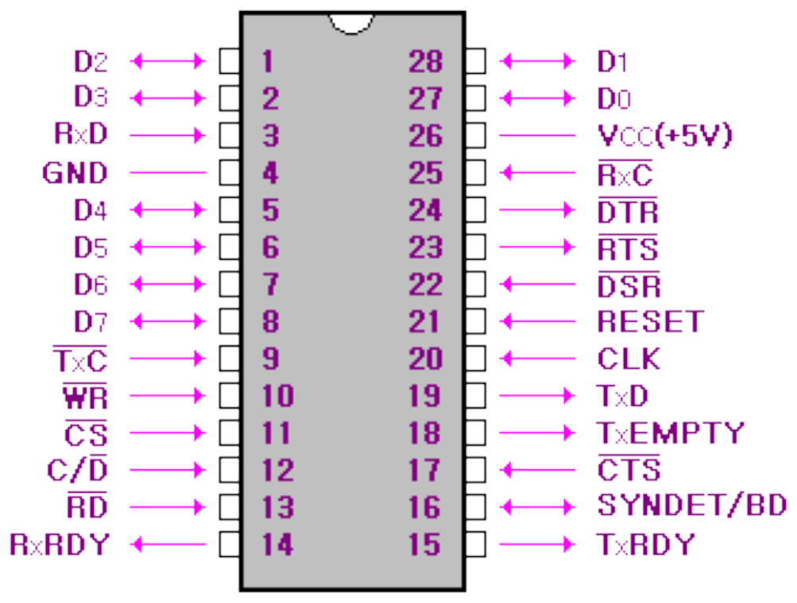
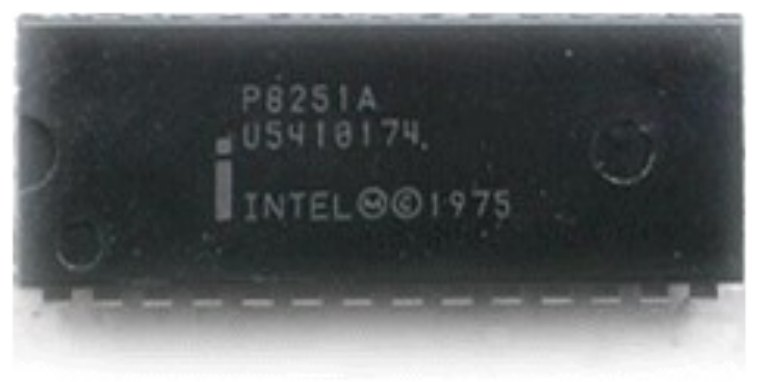
그림 1-26 8251의 핀 배치도 및 외형
(2) 핀별 기능
(가) D0∼D7 : CPU에서의 데이터, 커맨드, 스테터스를 주고받기 위한 데이터 버스
(나) RESET : 새로운 컨트롤 워드를 받을 때까지 IDLE 상태로 대기
(다) CLK(Clock) : 내부 동작의 타이밍을 맞추는데 사용. 비동기 x1모드에서는 RxCLK/TxCLK의 30배 이상이 되어야 하며, x16, x64 모드는 4.5배 이상이 되어야 한다.
(라) WR(Write) : CPU가 8251로 데이터나 컨트롤 워드를 써넣을 때 사용.
(마) RD(Read) : CPU가 8251의 스테터스, 데이터를 읽을 때 사용.
(바) C/D(Control/Data) : CPU와 8251과 데이터를 주고받을 때 컨트롤 레지스터 혹은 데이터 레지스터를 지정
(사) CS(Chip Select) : 8251을 선택(Enable)할 때 사용
(아) TxD(Transmitter Data) : 송신 데이터 출력
(자) RxD(Receiver Data) : 수신 데이터 입력
(차) TxC(Transmitter Clock), RxC(Receiver Clock) : 송/수신용 시리얼 기준 클럭으로 비동기식일 경우 보레이트의 ×1, ×16, ×64의 주파수, 동기식일 경우에는 보레이트와 같은 주파수 입력
(카) TxRDY(Transmitter Ready) : 데이터 전송이 가능하다는 것을 알리는 신호
(타) RxRDY(Receiver Ready) : 송신된 데이터가 수신 버퍼에 있다는 것을 표시
(파) TxEMPTY(Transmitter Empty) : 송신 버퍼에 데이터가 없음을 표시
(하) SYNDET/BD(SYNC Detect/BRKDET Detect) : SYNDET는 동기식 모드 입/출력 핀으로 사용되며, BD는 비동기 모드시 브레이크 상태 검출
(거) DTR(Data Terminal Ready) : 8251이 송신 가능 상태에 있다는 것을 모뎀에 알림
(너) DSR(Data Set Ready) : 모뎀의 상태를 검출
(더) RTS(Request To Send) : 모뎀의 송신 기능을 조정
(러) CTS(Clear To Send) : 모뎀의 송신 가능의 상태를 검출
연 습 문 제
다음 각 물음에 대하여 답을 하시오.
1. 8255 IC에 대하여 간단히 설명하시오.
2. Z80과 8255의 인터페이스 방법을 간단히 설명하시오.
3. 8255 컨트롤 워드에 대하여 설명하시오.
4. 8253 IC에 대하여 간단히 설명하시오.
5. Z80과 8253의 인터페이스 방법을 간단히 설명하시오.
6. 8251 IC에 대하여 간단히 설명하시오.